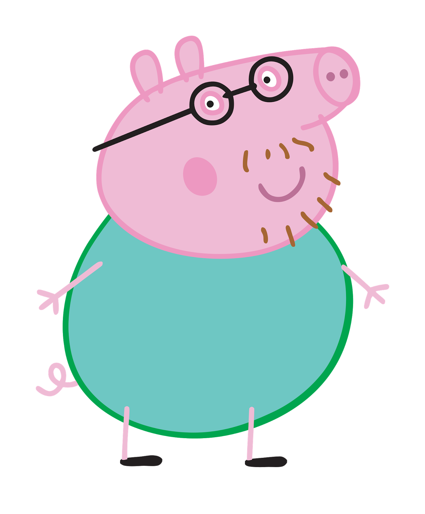

Merhaba bebeğim !
Zeki bir adam bir gün dedi ... bilge bir adam uzaktan kötülük görür ve kendini önceden hazırlar
Bu gece iyi uyumadım, ben adamım, bu yüzden ilk adımı atmalıyım...

Savaş istemiyorum, barış istiyorum, bu yüzden bu küçük sürprizi yaptım
Bebeğim dürüst olalım
Seni ölüme sevdiğimi biliyorsun
Beni ölüme sevdiğini biliyorum
Tanrı bana cennetten önce cennet hissettirmeni sağladı ... ve sana tüm kırık parçaları düzeltmeme söz verdim ... gördün ve Philip'in yapabileceğini hissediyorsun ... sadece bunu istiyorum ... daha önce olmasını ve her zaman orada olmasını ve her zaman orada olmasını istiyorum ... ama güvenine ihtiyacım var ... ve elimden gelenin en iyisini yapacağım ...
Tanrı sana uzun zamandır aradığın adama verdi ... seni anlayacak ve hayatının tüm saniyesini seninle paylaşacak .... Eminim bu adamım ... ve eminim ki bunu biliyorsun ... ve benden korkma, bana güven ve kocanıza özgür ol, sana gerçeği söyleyecek ve sizi bu dünyada en çok sevildiğini hissettirecek ... bunu biliyorsun bebeğim, kalbiniz bunu biliyor ...
Fix or fix.... hatırlıyorsun
Let's fix and have some Relationship advice video... it's just 6 minutes by video... after watching a video, we will have 15 or 20 minutes to discuss about the video, we can do it after your study at 18h... i will prepare the video and send you with subtitle... we will see it together......